Преглед на проекта
Вашият климатик не е стар — просто има нужда от малко внимание!
Колко често трябва да е профилактиката ли? На този въпрос няма универсален отговор, който да важи за всяка среда и за всеки климатик. Всеки уред се замърсява по различен начин — според помещението, начина на използване и условията, в които работи.
Но нашият отговор е: всяка година.
Профилактиката на климатика не е просто измиване. Тя е превантивно обслужване, което помага да се запази правилната работа на системата, да се удължи животът на климатика и да се запази неговата ефективност.
Редовната профилактика означава
- по-ефективна работа
- по-чист въздух
- по-малко натоварване на системата
- по-дълъг живот на уреда
- по-малък риск от неприятни изненади и скъпи ремонти
Резултатът
Затова не бързайте да сменяте стария климатик с нов. Понякога не му трябва подмяна — трябва му добра профилактика.
Не ги сменяме с нови. Връщаме ги към младите години с профилактика.
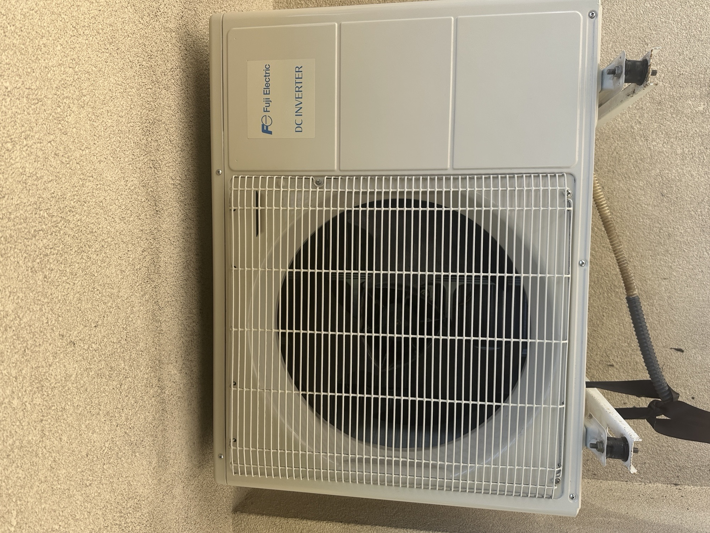
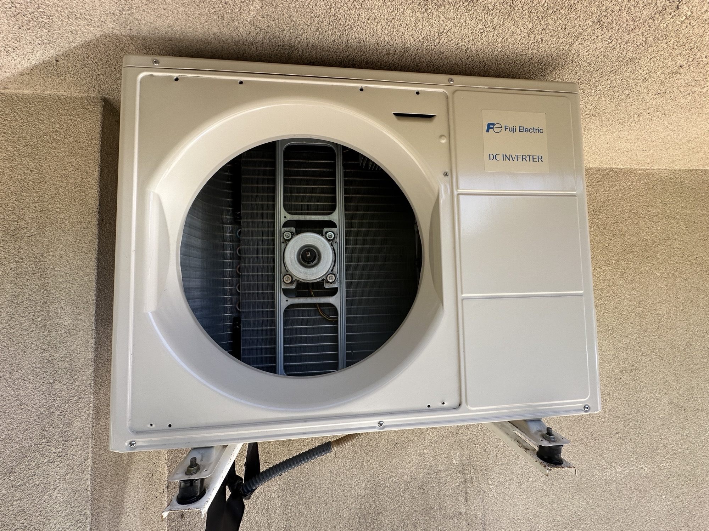
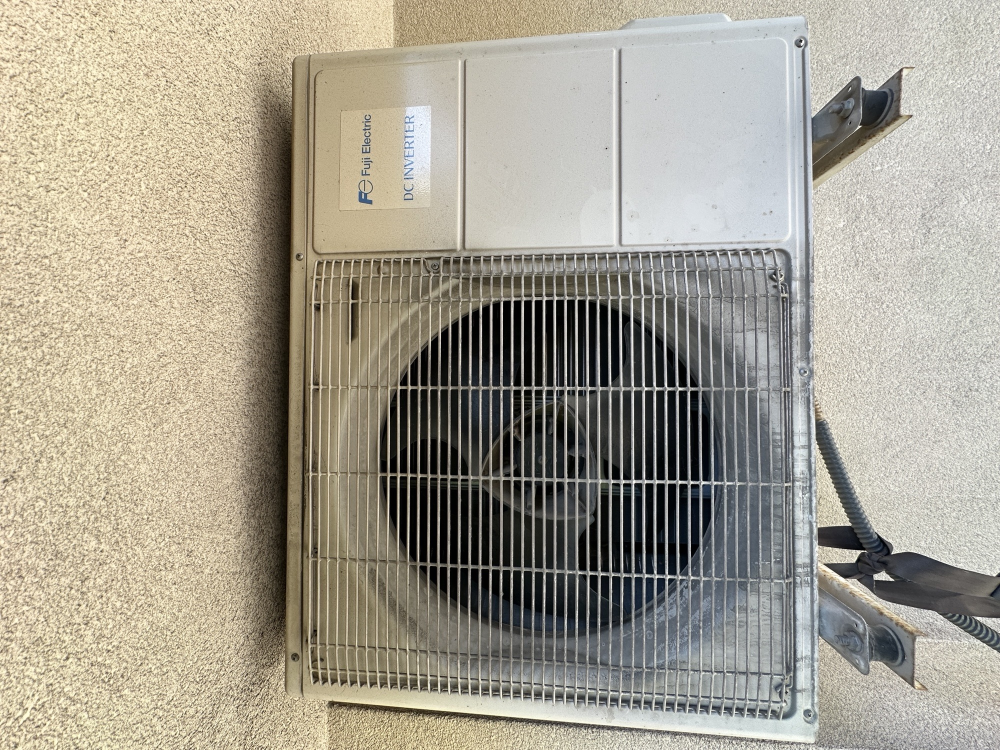
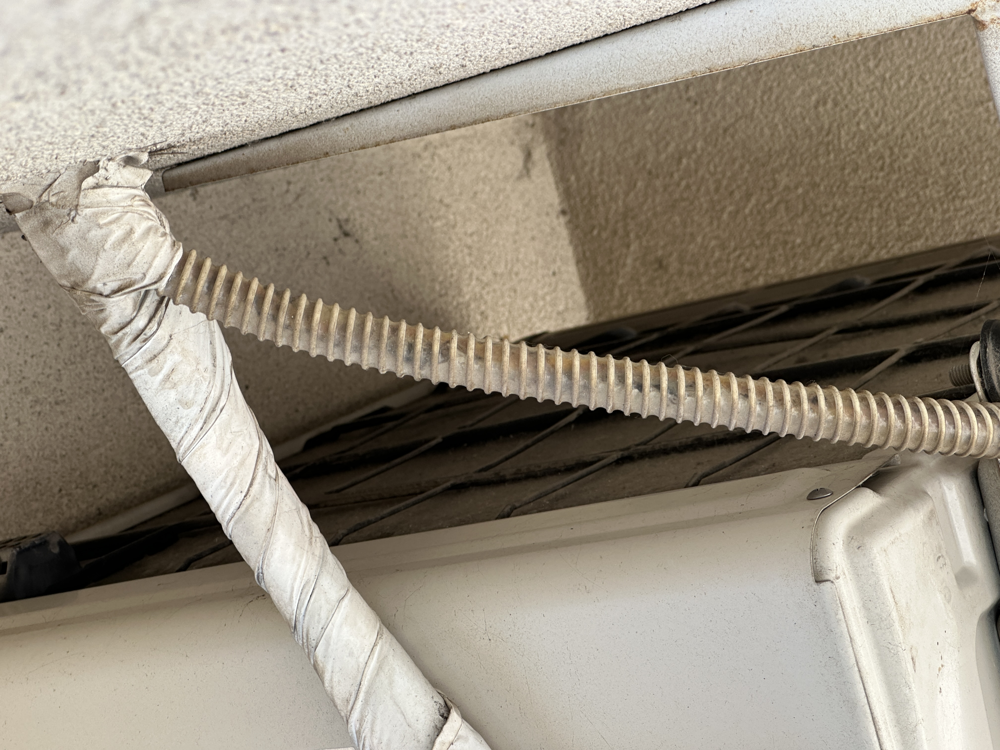
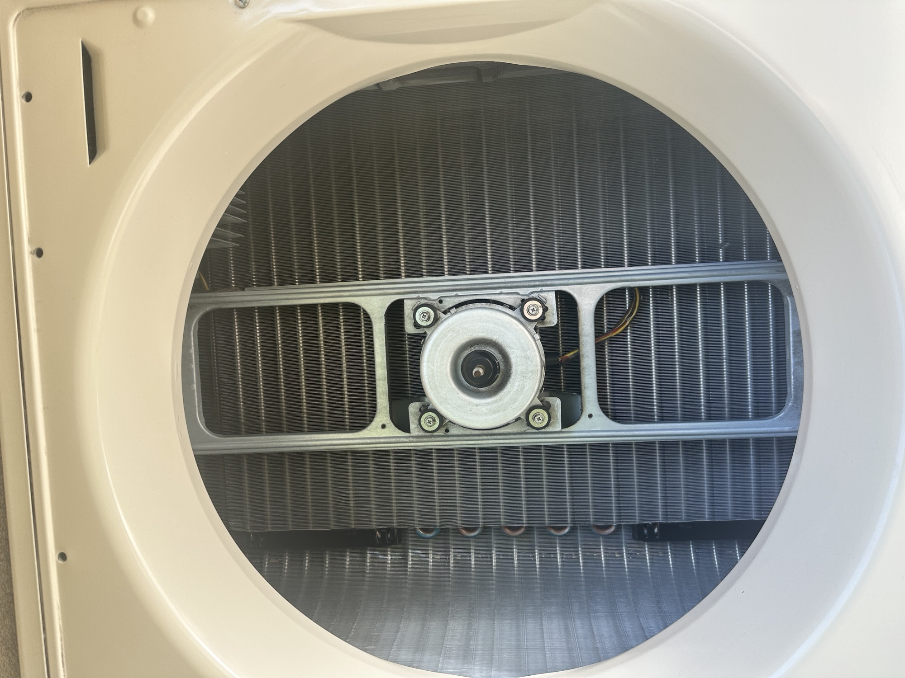
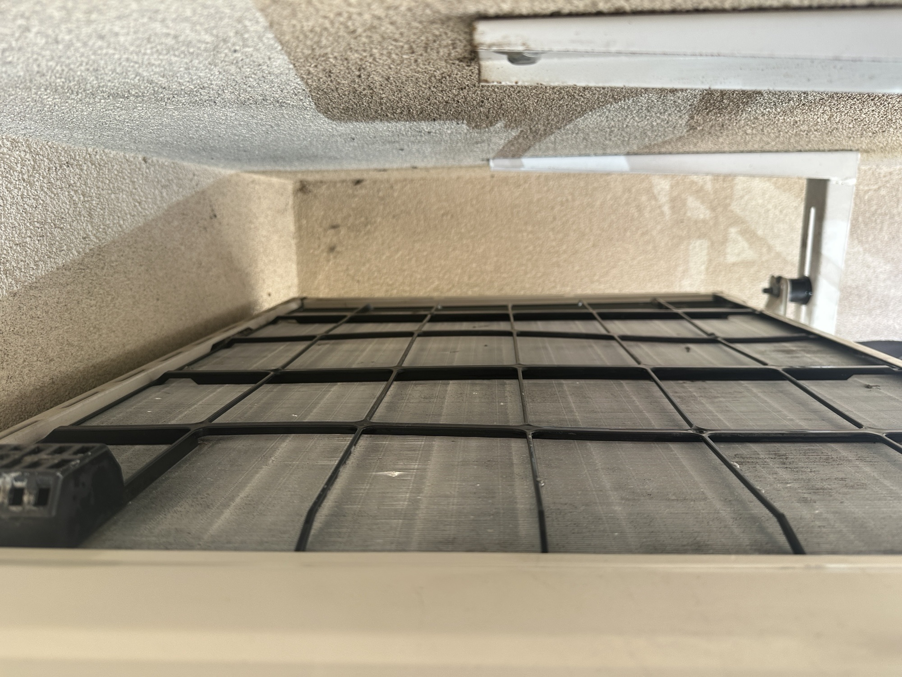
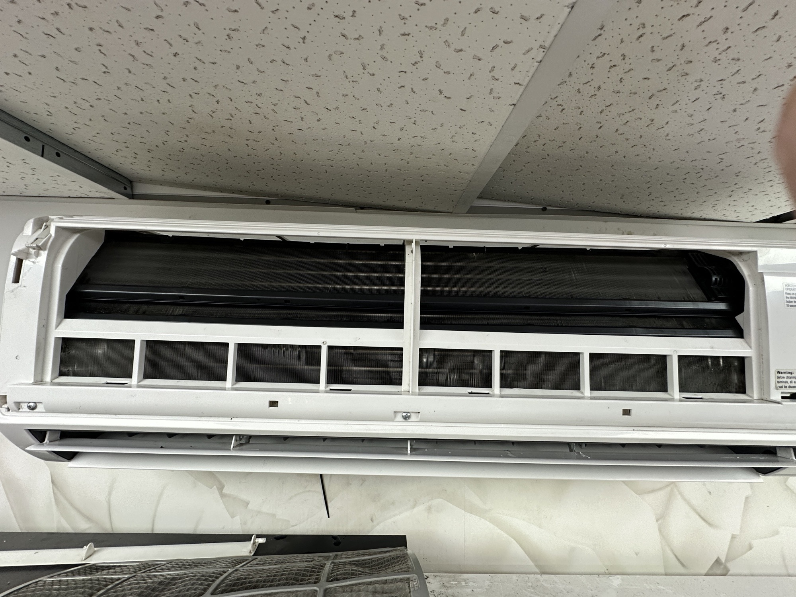
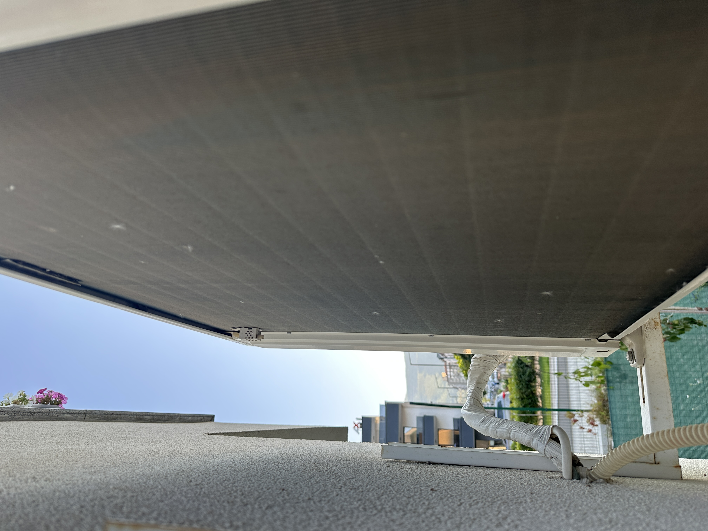
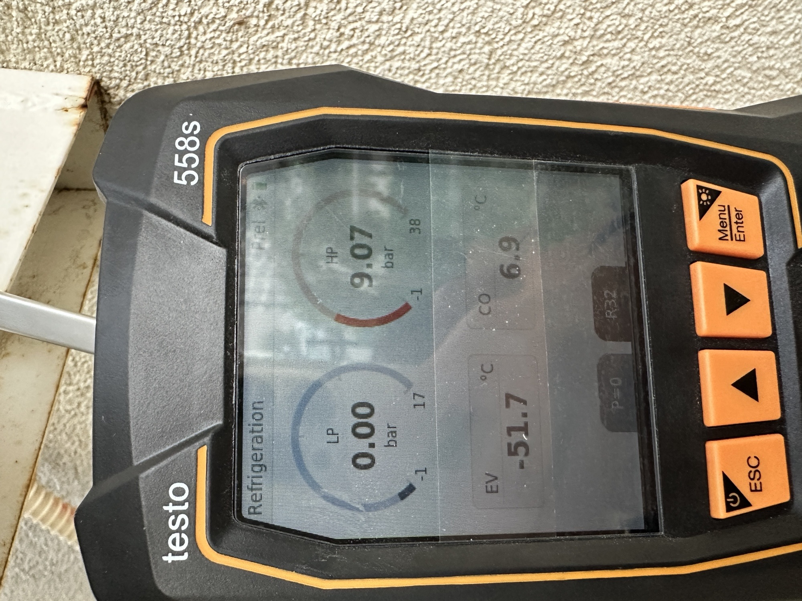
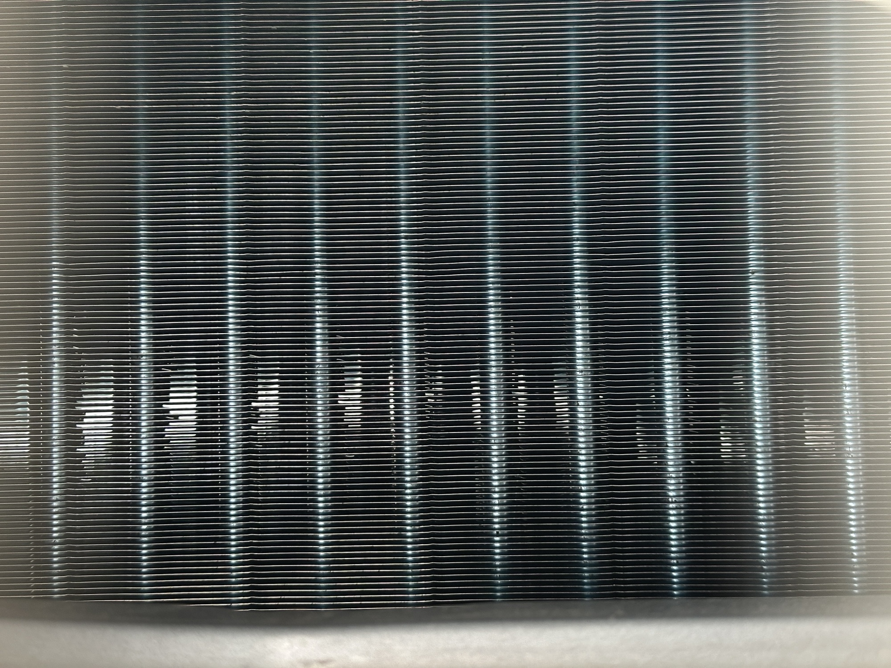
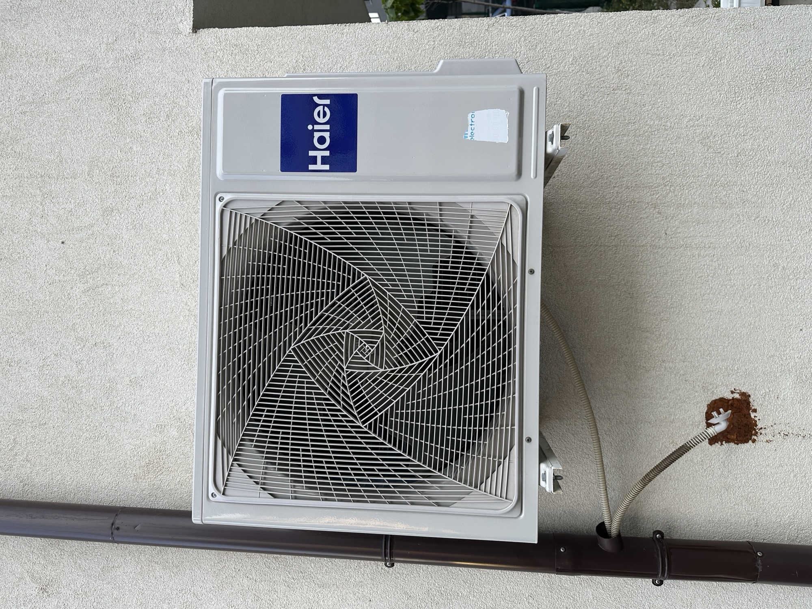
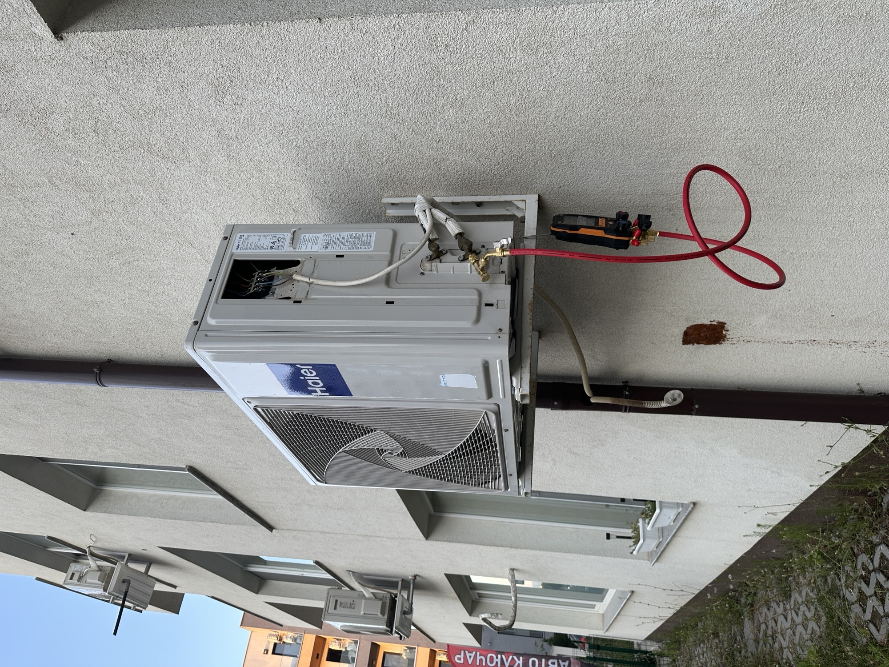